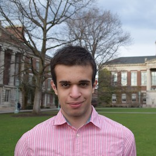
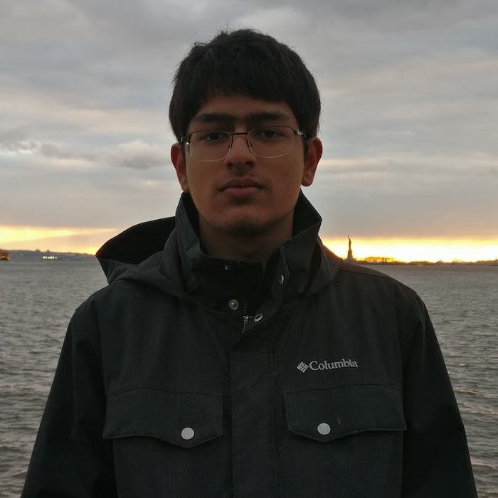
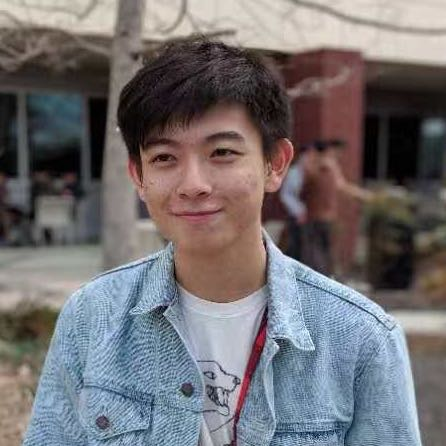
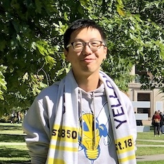
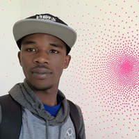
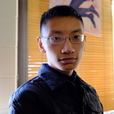

CSC 252 will not be easy, but will be a rare enlightenment and give you unique thrills.
In CSC 172 you learned how to write programs in languages that humans can understand (e.g., Java). CSC 252 will teach you how human-readable programs actually run on a computer. We will explain how to transform a human-readable program to a computer-understandable program, how the computer-understandable program is organized and interfaced with the underlying hardware processor, and how to design hardware processors that can execute programs as fast, safe, and efficient as possible.
Ultimately, our objective is to remove a good deal of the mystery of how modern computers work. There is NO magic. Even if you decide not to be a computer system designer in future, knowing these will empower you to get the computer to do useful work for you. In that vein, we will start at the bottom and work our way up. In every case, when we cover a sophisticated topic, we will try to tie it to what you already know. In this way, you don't have to memorize because everything you will learn next will be built on top of what you have already learned. We expect you to come out of this course not only knowing how modern computers work, having a deeper understanding of why they work as they are, but more importantly, why computers don't have to be built that way!
Email: [yzhu at rochester]
Office hours: Friday 11:00-12:00, or by appointment, in Wegmans Hall 3501.
Don' be afraid of coming to office hours! Coming to office hours does not mean you are a weak student. If you just want to stop by and introduce yourself, that's OK also.

Daniel Busaba (Undergraduate TA)
Email: [dbusaba2 at u.rochester.edu]
Office hours: Thu 5:00-6:00, in Hylan 301.
Sudhanshu Gupta (Graduate TA)
Email: [sgupta45 at ur.rochester.edu]
Office hours: Wed 14:00-15:00, in Hylan 301.

Mandar Juvekar (Undergraduate TA)
Email: [mjuvekar at u.rochester.edu]
Office hours: Thu 11:00-12:00, in Hylan 301.
Max Kimmelman (Undergraduate TA)
Email: [mkimmelm at u.rochester.edu]
Office hours: Mon 5:00-6:00, in Hylan 301.

Weituo Kong (Undergraduate TA)
Email: [wkong2 at u.rochester.edu]
Office hours: Mon 15:45-16:45, in Hylan 301.

Jiahao Lu (Undergraduate TA)
Email: [jlu39 at cs.rochester]
Office hours: Mon 2:15-3:15, in Hylan 301.

Vladimir Maksimovski (Undergraduate TA)
Email: [vmaksimo at u.rochester.edu]
Office hours: Mon 12:45-1:45, in Hylan 301.

Nathan Reed (Undergraduate TA)
Email: [nreed7 at u.rochester.edu]
Office hours: Mon 12:15-1:15, in Hylan 301.

Yawo Alphonse Siatitse (Undergraduate TA)
Email: [asiatits at u.rochester.edu]
Office hours: Tue 11:00-12 :00, in Hylan 301.

Yudi Yang (Undergraduate TA)
Email: [yyang116 at u.rochester.edu]
Office hours: Tue 2:15-3:15, in Hylan 301.
Shuang Zhai (Graduate TA)
Email: [szhai2 at cs.rochester.edu]
Office hours: Wed 13:00-14:00, in Hylan 301.